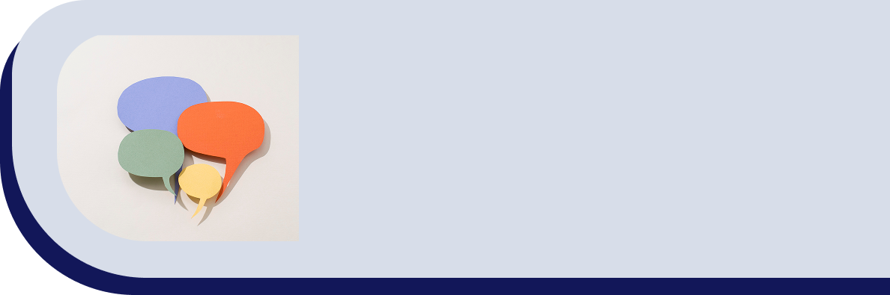

Juntos, podemos enfrentar o imprevisível!
Para quem vive ou convive com eventos extremos, oferecemos acolhimento, informação e suporte para agir e se recuperar.
Saiba Mais
Conheça nossos serviços:
Canal de Apoio Psicossocial
Canais de atendimento para que vítimas de eventos extremos ou moradores de zonas de risco, recebam suporte psicológico, orientação social, jurídica, financeira e nutricional.

Blog de Ajuda
Canal de FAQ e textos para auxiliar, ensinar e alertar sobre diversas áreas. Tais como primeiros socorros, importância do cuidado com saúde mental.
